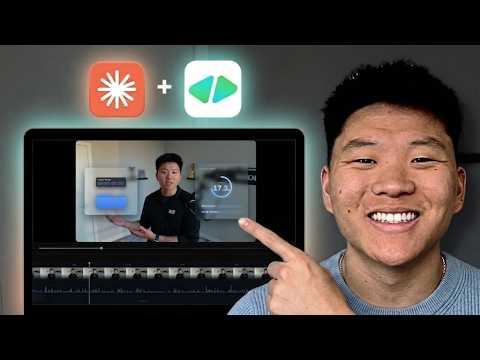

YouTube｜Claude Code 端到端影片剪輯：Video-use 負責修剪，HyperFrames / Remotion 負責動態圖像

為什麼保存
這支影片值得歸檔，因為它不是單純展示「AI 幫你剪影片」的行銷口號，而是把影片剪輯拆成可由 coding agent 協調的管線：
- raw footage 進資料夾。
- Claude Code 作為 orchestrator 讀取專案與指令。
- video-use 負責修剪 filler words、dead space、false starts。
- HyperFrames 或 Remotion 負責 motion graphics / subtitles / overlays。
- 透過 timeline preview 做自然語言迭代。
這種模式接近「把剪輯流程變成 agentic software pipeline」，很適合觀察 AI 內容製作從手動工具走向程式化、自動化與可重複工作流的變化。
影片資訊
- 標題：Claude Video Editing Just Became Unrecognizable
- 頻道：Nate Herk | AI Automation
- 上傳日期：2026-04-22
- 片長：約 28:13 / 字幕擷取 28:14
- 觀看數：YouTube metadata 可見約 311,413
- 讚數：YouTube metadata 可見約 9,536
- 描述列出的工具：
- Hyperframes：`https://github.com/heygen-com/hyperframes`
- Video-use：`https://github.com/browser-use/video-use`
註：字幕 ASR 多次把 `Claude Code` 辨識成 `Cloud Code`；本文依影片標題、描述與官方脈絡校正為 `Claude Code`。
核心工作流
### 1. Claude Code 作 orchestrator
影片開場宣稱：使用者只要丟入 raw file，Claude 就能修剪錯誤與空白、加入 motion graphics、動態元素與字幕。更精確地說，Claude Code 在這裡不是「內建影片剪輯器」，而是協調工具鏈的 agent：讀專案、執行命令、呼叫 video-use / HyperFrames / Remotion，產出可預覽與可迭代的影片檔。
這與 Anthropic 官方對 Claude Code 的定位一致：Claude Code 是 agentic coding tool，可讀 codebase、編輯檔案、執行命令，並整合開發工具；它可在 terminal、IDE、desktop app 與 browser 使用。
### 2. Video-use 修剪 talking-head footage
影片描述與字幕都把 video-use 放在「trimming」角色：剪掉 filler words、dead space、false starts，輸出較短版本。影片中示例提到 50 秒 raw clip 被剪成約 27 秒；現場示範也從 raw recording 產生 `edited.mp4`。
官方 README 查核也對得上：`browser-use/video-use` 描述為「Edit videos with coding agents」，功能包括：
- cuts out filler words、false starts、dead space
- auto color grades
- 30ms audio fades
- burns subtitles
- generates animation overlays via HyperFrames、Remotion、Manim 或 PIL
- self-evaluates rendered output at cut boundaries
- persists session memory in `project.md`
### 3. HyperFrames vs Remotion
影片比較兩種 motion graphics 做法：
- Remotion：可由 agent 產生 React-based video composition，字幕中示例顯示它能同步元素、產出可接受的 motion graphics。
- HyperFrames：作者偏好其動畫質感，尤其是 liquid glass cards、timeline editor、快速調整 motion graphics 的 timing。
官方查核：
- HyperFrames GitHub 描述是「Write HTML. Render video. Built for agents.」，README 說它把 HTML、CSS、media、seekable animations 轉成 deterministic MP4 videos，可由 Claude Code、Cursor、Gemini CLI、Codex 等 coding agents 使用 skills。
- Remotion 官網定位為「Make videos programmatically」，使用 React 建立真實 MP4 影片，也支援用 coding agents / API / bulk rendering 建立影片。
### 4. Prompting motion graphics：先計畫再生成
影片中段最有價值的不是「一鍵剪完」，而是作者如何提示：
- 指定某句話出現時，在左半邊跳出 liquid glass style card。
- 指定 karaoke style 字幕或標題效果。
- 指定「mistakes will be cut」卡片與剪刀動畫。
- 指定 video-use pipeline 概念要用某種圖像化方式呈現。
- 先要求 agent 產生 plan / beats / timeline，再批准生成 motion graphics。
作者也提醒：如果不先規劃，agent 可能走錯方向，浪費時間與 Claude session limit / token。
### 5. Preview and iterate
後段示範很現實：第一版不是完美成品。作者指出幾個問題：
- liquid glass 卡片遮到臉。
- 全片出現不該存在的 grid overlay。
- 結尾 face cam 裁切方向錯誤。
- 部分畫面模糊或構圖需要再調。
因此更像是「AI 幫你完成可編輯初稿 + 你用自然語言做導演回饋」，而不是完全免審稿的自動剪輯。
章節學習地圖
- 0:00 Intro：展示 raw clip 進 Claude 後，被修剪、加入 motion graphics、字幕與 timeline editor。
- 1:07 How the Pipeline Works：說明舊流程是 Premiere 手動修剪、手動畫動畫、手動 render；新流程改由 Claude Code 串接工具。
- 3:06 Claude Desktop Setup：使用 Claude desktop app 建 project；作者也比較 VS Code 與 desktop app 的差異。
- 5:59 Trimming the Raw Video：用 video-use 做 trimming；可選 OpenAI Whisper、本地工具或 ElevenLabs API 做轉錄。
- 7:21 HyperFrames vs Remotion：比較 Remotion 自動生成與 HyperFrames 動畫質感。
- 9:45 Teaching Your Style：把既有影片與 motion philosophy / style docs 當成後續影片的風格參考。
- 14:37 Prompting the Motion Graphics：用非常具體的自然語言描述 motion beats、卡片位置、字幕樣式與時間點。
- 21:37 Preview and Iterate：檢查第一版，指出遮臉、grid overlay、裁切錯誤等視覺問題，再要求修正。
- 25:06 Final Render：觀看修正版，確認動畫同步與效果，並提醒提示越具體越省時間與 tokens。
可以複用的操作原則
- 把剪輯拆成明確階段：transcribe → trim → motion plan → render → preview → revise。
- 不要只說「幫我剪得好看」；要指定哪一句話、畫面哪一側、什麼風格、什麼轉場、是否遮臉。
- 讓 agent 先回 motion graphics plan，再批准生成，避免浪費 token 與 render 時間。
- 建立 style docs / motion philosophy，讓下一支影片能沿用前一支的視覺語言。
- 把每次完成的影片、project notes、錯誤修正記錄保存，作為下一次 agent 的上下文。
風險與限制
- 影片標題雖寫 Claude video editing，但 Claude Code 本身不是影片剪輯 app；它是 orchestration layer，實際剪輯與 render 依賴 video-use、HyperFrames、Remotion、ffmpeg、轉錄 API 等工具。
- video-use README 提到 setup 可能需要 ElevenLabs API key；導入時不可把 API key 寫進公開 repo 或分享給不可信 agent。
- 使用外部轉錄 / TTS / LLM provider 時，raw footage、聲音與字幕內容可能送到第三方；含學生、客戶、未公開產品或個資的影片要特別注意。
- 第一版輸出可能遮臉、構圖錯誤、字幕時間不準或風格跑偏；仍需人工審片。
- Motion graphics 與素材可能涉及字型、音樂、圖像與授權；商用前要逐一查核。
- 這類 pipeline 會消耗 token、API 費用與 render 時間；越長、越多動畫 beats 的影片成本越高。
來源
- YouTube：`https://www.youtube.com/watch?v=Aw3BkmhYu4I`
- HyperFrames GitHub：`https://github.com/heygen-com/hyperframes`
- video-use GitHub：`https://github.com/browser-use/video-use`
- Claude Code 官方文件：`https://code.claude.com/docs/en/overview`
- Remotion：`https://www.remotion.dev/`